Location 1: Persian Empire | Written By: Rudy Soliz |
Ride: The Royal Ride |
Aspect(s) Shown | Explanation | Description of Feature |
Religion Art/Architecture | The royal ride connected Persia and was the highway of the empire. Religion was also spread by roads, so during this ride you will learn about Zoroastrianism, the religion practiced in Persia. | The royal ride will be a ride that is more long than it is tall, and will go all the way from 1 side of the section to the other. It will stop at every other feature. This ride will have infographics and photos of Zoroastrianism art. 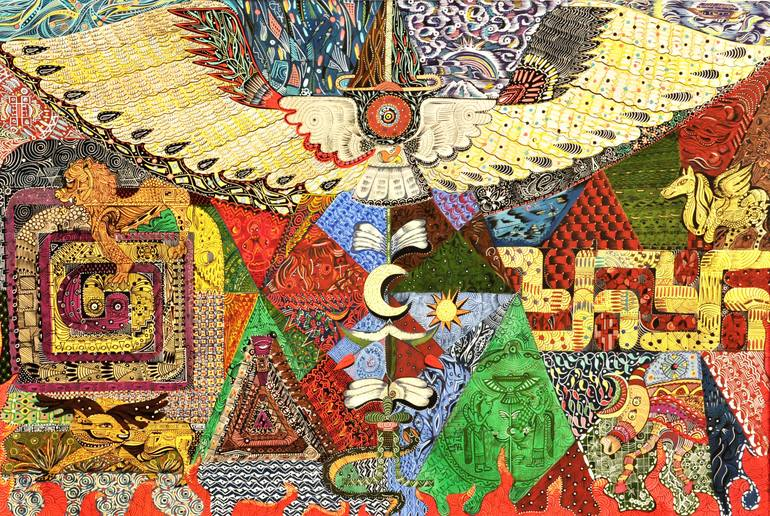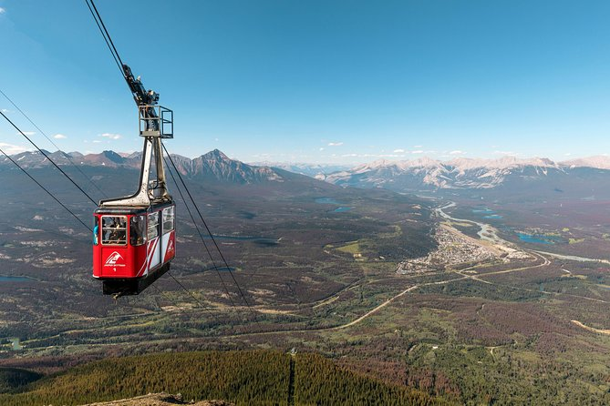 |
Ride: The Achaemenid Abyss |
Aspect(s) Shown | Explanation | Description of Feature |
Trade | This is all about gold and currency. Mostly the method of creating the coins and mining the coins, you take the journey of currency. | It is a mostly underground ride. 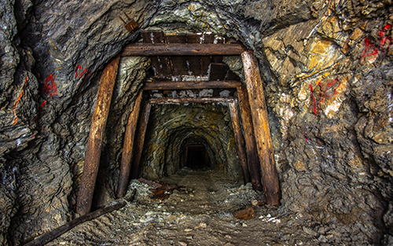 |
Eating Location: Kebab on a stick |
Aspect(s) Shown | Explanation | Description of Feature |
Agriculture | A main dish of the persian empire was the kebab, which is actually more ancient than many think. | The specialty of this eating location is the kebab kebab, where you get many kebabs on a stick. |
Shop: All Trades |
Aspect(s) Shown | Explanation | Description of Feature |
Trade Art/Architecture | This will be a store that sells many things, similar to the persians themselves. And will be in the style of Achaemenid architecture. | Has columns and other features of early persia. Will sell refreshments, snacks, and persian themed memorabilia. |
Show: The hidden rise |
Aspect(s) Shown | Explanation | Description of Feature |
Social Structures and Rulership | This will be an interpretation of how Darius I The Great came into power and how he treated the persian people. | A street performance that’s free. and people can come and go as they please |
Monument: The Cyrus Hotel |
Aspect(s) Shown | Explanation | Description of Feature |
Social Structures and Rulership Law and Philosophy | Each room will be stylized as the homes of each social class, where the first floor will be peasantry and the top penthouse will be of the rulership and royalty. | It is in the shape of Cyrus the Great’s Tomb. But 2x bigger to make it a hotel. The ground floor is similar to a museum, and is filled with descriptions and artifacts of his accomplishments. Either side will have elevators to get to the upper floors and hotel rooms |
Characters |
Character 1: Darius I The Great |
Character Action (s): | Historical Significance: |
Popularizes the play about his rise to power, and then acts in it | He was a genius in administration and he made many great building projects. He was also praised for the benevolence of his people. |
Character 2: Cyrus the Great |
Character Action (s): | Historical Significance: |
Is walking around his hotel and | He founded the first Persian empire. |
Location 2: Greek Empire | Written By: Cyrus Lauderdale |
Ride: Aqueduct slip n slide |
Aspect(s) Shown | Explanation | Description of Feature |
Agriculture/crops | Aqueducts were initially invented by the Greeks and used to water their crops. Having a water ride of this with them demonstrates their agricultural prowess and invention of aqueducts. | A series of currents through tubes that slope downwards from a pool, you randomly go through different tubes each time you ride it. |
Ride: Watermill away |
Aspect(s) Shown | Explanation | Description of Feature |
Technology | A ferris wheel themed like a watermill. The watermill was invented by the greeks. | A ferris wheel that is themed to look like a giant watermill. |
Shop: Par-the-non |
Aspect(s) Shown | Explanation | Description of Feature |
Art & Architecture | The pantheon is a temple that shows key elements of Greek architecture and holds some artwork. | A large grand temple to Athena filled with artwork significant to that Greek God. |
Eating Location: Fragmented Foods |
Aspect(s) Shown | Explanation | Description of Feature |
Law & philosophy | Greek law was individual to each city state, so like that our service and food will vary by the server. Some servers offer specific cuisines and seat you in certain areas, others do this entirely differently. | A restaurant split into many different small sections of a couple seats that each serve different quality food and from different cuisines. |
Show: Panathenaic Stadium //Rudy: 2 about pantheon? lazy |
Aspect(s) Shown | Explanation | Description of Feature |
Social structure & Rulership | A large stadium in which shows and fights happen. You buy a “class” of tickets that shows where you will sit, from right next to it standing up to the ruler area. | A stadium filled with seats where plays, duels and other entertainment happens. Seats are divided by the “class” of ticket you buy. |
Monument: Pantheon Statue //Rudy: 3 about Pantheon!?!? REALLY?????? |
Aspect(s) Shown | Explanation | Description of Feature |
Religion | A large statue of the Entire Greek pantheon which shows the religion of the Greek empire. | A gargantuan statue of all the Greek Pantheon. |
Characters: Zeus & Ares |
Character 1: Zeus |
Character Action (s): | Historical Significance: |
Walks around in a costume on stilts and to appear very tall. Constantly brags about his power. | Famous greek God, leader of the Greek Pantheon. |
Character 2: Ares |
Character Action (s): | Historical Significance: |
Runs around yelling at people and telling them to join the battle. | Greek God,the god of war. |
Location 3: Roman Empire | Written By: Jeremy Vettor |
Ride: The Backstab |
Aspect(s) Shown | Explanation | Description of Feature |
Social Structure and Rulership Art and Architecture | The ride going up and down represents Julius Caesar being stabbed 23 times. I will make the area on the ride look like the Curia of Pompey of the Theater (where he was stabbed). | The ride starts off going up a steep slope. Once reaching the top, you ride down the slope and start going up and down, aboveground and underground (23 times). 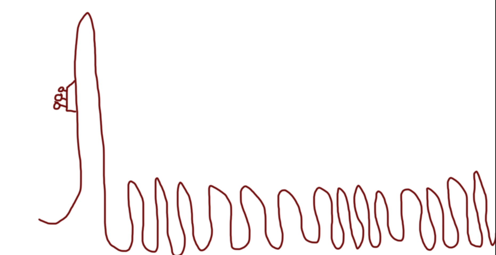 |
Ride: The Bath Bomb |
Aspect(s) Shown | Explanation | Description of Feature |
Art and Architecture | The recreation of the bathhouse displays the beautiful Roman Bathhouse. | The Bath Bomb is a recreation of the famous Roman Bathhouse with one of the pirate ship looping rides. 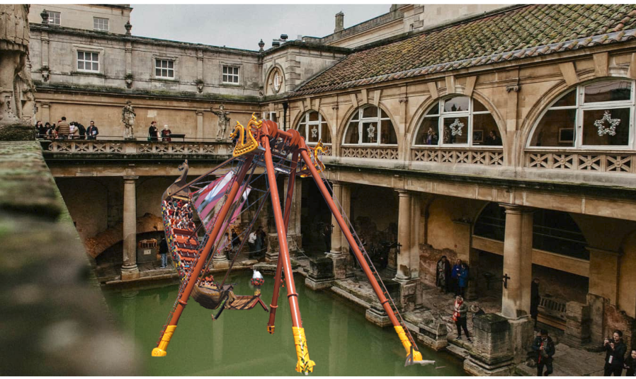 |
Shop: Macellum Marketplace |
Aspect(s) Shown | Explanation | Description of Feature |
Agriculture / Crops / Trades Art and Architecture | My shop will look like a traditional market from Rome and it will sell wine. My shop sells wine because Ancient Rome was famous for its deluxe wine and it was often exported. 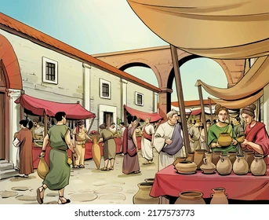 | My shop will look like a traditional Roman market. These markets looked like food shops at your local mall: they have a counter at the entrance instead of having a shop that you can walk around in. I will make them out of concrete and I will sell wine. |
Eating Location: Eataly |
Aspect(s) Shown | Explanation | Description of Feature |
Agriculture / Crops / Trade Art and Architecture Religion | I will serve traditional Roman Cuisine in this restaurant along with some basic food for picky eaters. I will also base the design off of regular eating locations in Rome. Like for example, taverns; We will also serve wine as Ancient Rome drank wine to connect to their gods. | These restaurants will be located around the park, mostly near the hotel, and like stated before, will be based around Ancient Rome (food and design wise). 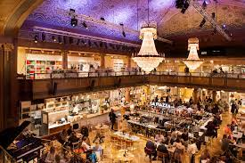 |
Show: Colosseum Fights |
Aspect(s) Shown | Explanation | Description of Feature |
Social Structures and Rulership Law and Philosophy Art and Architecture | The Colosseum was a massive part of Rome. It provided entertainment to many and the idea of the Colosseum is what I aim to recreate. (without the killing part) Many people want to have the experience of watching the Colosseum and it will be a big selling point. | On top of the underground hotel, there will be a Colosseum. In this Colosseum, we will have daily fights at noon which will be hosted by many trained professionals. 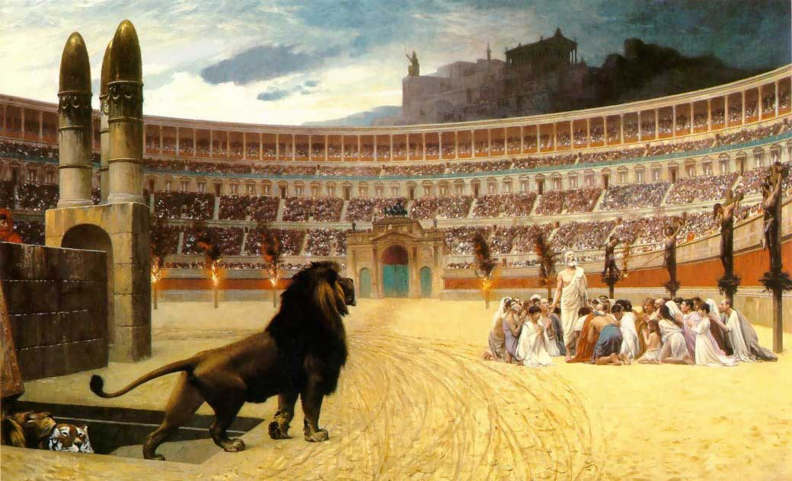 |
Monument: Colosseum Hotel |
Aspect(s) Shown | Explanation | Description of Feature |
Social Structures and Rulership Art and Architecture | The hotel will be underground and each room will look like a traditional Roman room. The Colosseum above will look like the actual Colosseum (before it fell apart) and will have daily fights. | The Colosseum hotel will be a recreation of the Colosseum in Rome. The hotel part will be underground, while the actual Colosseum will be used for daily fights at noon. 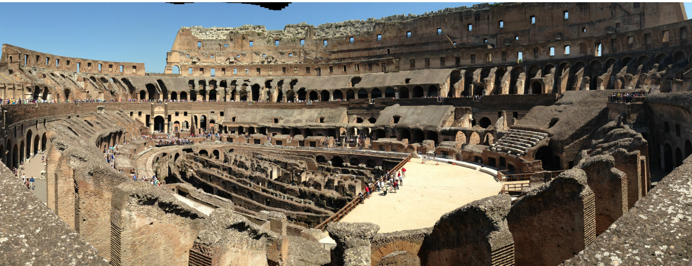 |
Character |
Character 1: Julius Caesar |
Character Action (s): | Historical Significance: |
Julius Caesar will run around the park taking photos and giving high-fives to the park guests. At 1:00 after the Colosseum fight is over, a pack of assassins will run after Julius Caesar trying to “stab” him. | Major Historical Leader of Rome 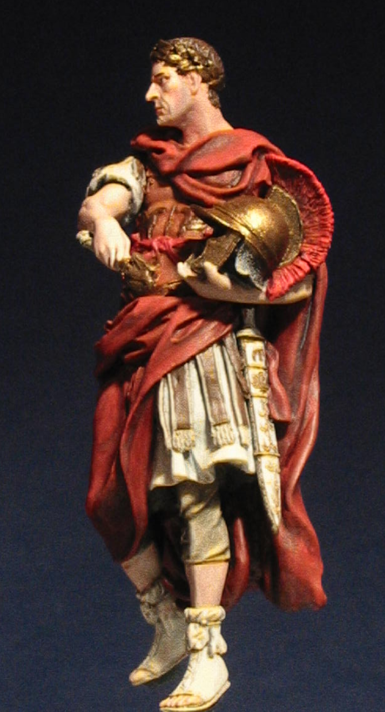 |
Character 2: Augustus |
Character Action (s): | Historical Significance: |
Augustus will run around the park picking 2 people everyday. These 2 people will get exclusive merchandise or a small cash prize. | Another Major Leader of Rome 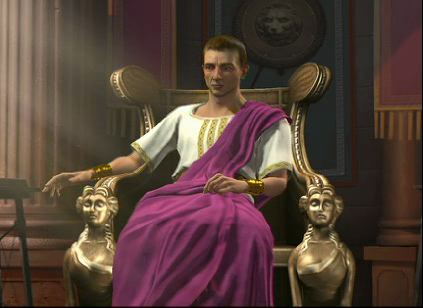 |
Location 4: India | Written By: Abraham |
Ride The Indus River Adventure |
Aspect(s) Shown | Explanation | Description of Feature |
Agriculture / Crops / Trade | Were going on a boat trip to explore different Agriculture and Trade routes of India. 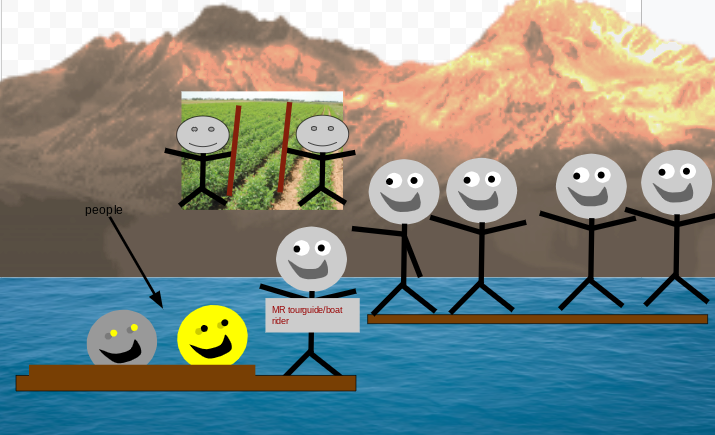 | - We are going to start in a mock-up of the Arabian Sea and infront is a river.
- The entire tour is surrounded by key geographic features of Ancient India, when we go down the river we pass by India farms, and static models of different trading boats.
- Actors in the distance doing farm action, and some in the boats pretend rowing or any actions you would do on a boat
- A tour guide on the Boat will explain the history of A.C.T[a][b][c]
- Recreations of India Boats, and key pieces of farm and general infrastructure.
- The Actual trip will be much shorter than how long it would take to go down the Indus river.
|
Ride: The Spy Adventure |
Aspect(s) Shown | Explanation | Description of Feature |
Bits of Philosophy | We will be traveling through trees, bushes, behind buildings, and listening to what the people are saying on route to the Eating Location.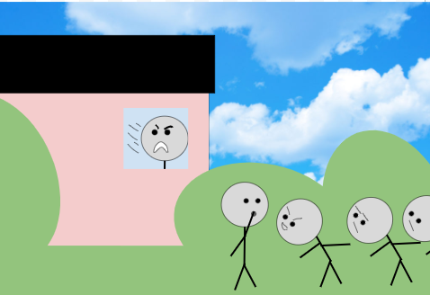 | - We will have to walk to the Eating Location
- The Entire area will be overgrown, in alley-ways
- There will be speakers or the background people talking in the background about ¨plans¨, and maybe bits of Philosophy that's tied in with Indian Culture
- The people are plotting a plan to ##### %#%%^### ###############
|
Shop Sculpture Workshop |
Aspect(s) Shown | Explanation | Description of Feature |
Arts and Architecture | After the boat trip, we will be dropped off at the Sculpture Workshop, where we can purchase kits or materials to make arts based on Ancient India. 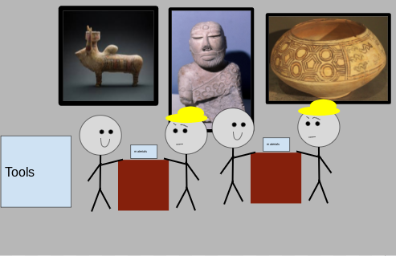 | - The Shape of the Building will be very reminiscent of The Tawang Monastery.
- There will be a workshop-like room similar to our fab lab but stylised, where they can teach you how to make these sculptures either with the kits provided, or from materials you bought. Its sorta similar to the Droid Depot in Disney World
|
Eating Location |
Aspect(s) Shown | Explanation | Description of Feature |
Law and Philosophy | Will be a restaurant but the server spies on you and they have to guess what they want based on their words they say.
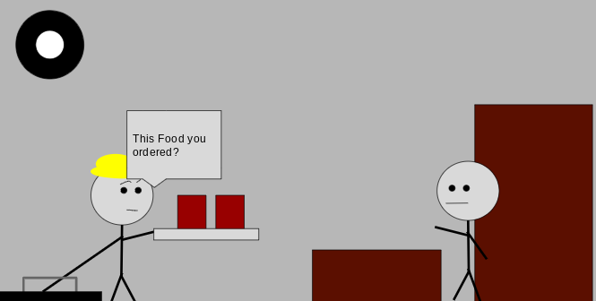 | - You get a booth table in a dining room, and you get a menu and you need to decide what you want
- There will be many hidden cameras everywhere and the Server has to guess what you want and deliver the guessed meal
- There is a small hatch where the server comes out from the ground, and gives you a meal
- This is all a reference of how the government used an espionage network to try and capture The Indian Subcontinent
- There is a tunnel network where the servers go around on, they are provided scooters if they hate walking
|
Show Live Action Over-Simplified |
Aspect(s) Shown | Explanation | Description of Feature |
Social Structures and Rulership
| It will be a live comedic performance of the explanation of the Social Structure and Ruler Ship of India. An example could be videos from over simplified but if they were live action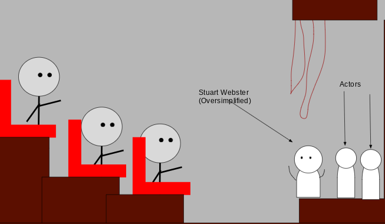 | - It will be in a theater room in the Hotel/Monument
- The seating arrangement will be similar to a theater.
- There will be live performers and actors performing the show
|
The Modern and Traditional Hybrid Monument of a Hotel |
Aspect(s) Shown | Explanation | Description of Feature |
Religion | The Monument will be a rectangular shaped Hotel. | The Monument will be very reminiscent of The outside will have traditional pillars and framing but modern walls, and will be the same on the inside The building layout will have a rectangular main building with a add on building of the theater |
Character |
Character 1 (CHARACTER) : The Boat Tour Guider |
Character Action (s): | Historical Significance: |
The Lead Captain of the ship, and explain the history of Trade Routes | To guide the rowers of the boat to their destination |
Character 2 (CHARACTERS) : The Workshop Sculpture People |
Character Action (s): | Historical Significance: |
To help you make your sculptures out of the kits you bought or the materials that come with the experience | They are the ones who are continuing the old traditions from Ancient India and showing it to new people |
Character 3 (CHARACTERS) : The Servers |
Character Action (s): | Historical Significance: |
They need to guess what food you want, and they go through a series of networks to get to your room thru a hatch | There were Espionage networks to try and take The Indian Subcontinent |
Character 4 (Special Guest): Stuart Webster from OverSimplified |
Character Action (s): | Historical Significance: |
The Famous Youtuber will be there to narrate the live action performance of Indian Social Structures and Rulership | Famous Youtuber that does history videos |
Location 5: China | Written By: All of Us |
Ride: The Silk Road |
Aspect(s) Shown | Explanation | Description of Feature |
Trade | This ride is all about the large trade route from Rome to china. | The ride wraps around in a circle, and it dips into rome in the air. 
|
Ride: The wall of China |
Aspect(s) Shown | Explanation | Description of Feature |
Art and Architecture | The Wall of China is probably China's most famous Architecture. We are remaking it and prioritizing every detail. | The Wall of China ride is a recreation of the famous Wall of China with a roller coaster being placed down the walkway. 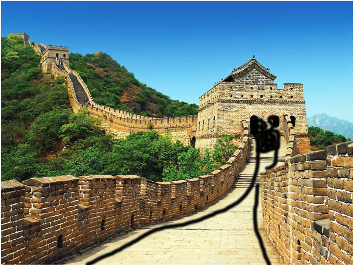 |
Shop: Made in China |
Aspect(s) Shown | Explanation | Description of Feature |
Religion | There will be recreations of religious art. There will also be people who have practiced the religion who you can ask questions. | Looks similar to a place of worship. 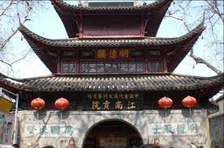 |
Eating Location: Han Hut |
Aspect(s) Shown | Explanation | Description of Feature |
Agriculture/crops | The main foods to be highlighted would be rice and noodle soup at all times. Millet would be served in the morning, as it was used as a cereal. | A home in a traditional Chinese style. 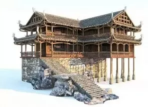 |
Show: |
Aspect(s) Shown | Explanation | Description of Feature |
Social Structures and Rulership | This will be a serious show talking about Social Structures and Rulership. | The Tone would be extremely serious and dark But at the same thing be pretty educational |
Monument: Tomb of the Warriors |
Aspect(s) Shown | Explanation | Description of Feature |
Law and Philosophy | Qi Shi Huang had these soldiers created and believed they would remind people of his power and protect him in the afterlife. | A tomb full of terracotta warriors that were definitely not stolen. If you go down far enough, you will see a river of mercury and the tomb of the first Qin emperor. |
Character: Thanos |
Character 1 (CHARACTER) : Confucius |
Character Action (s): | Historical Significance: |
Confucius will inform others about the religion he made and guide people to the store, he plays mind tricks.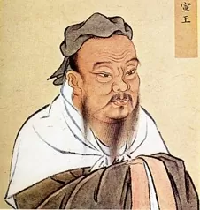 | He invented confucianism.
|
Character 2 (CHARACTER) : Sun Tzu |
Character Action (s): | Historical Significance: |
Sun Tzu will run around the park taking pictures with guests in his iconic background, he will also give out random quotes from his book “The Art of War”. | Sun Tzu was a famous Ancient Chinese Military Leader 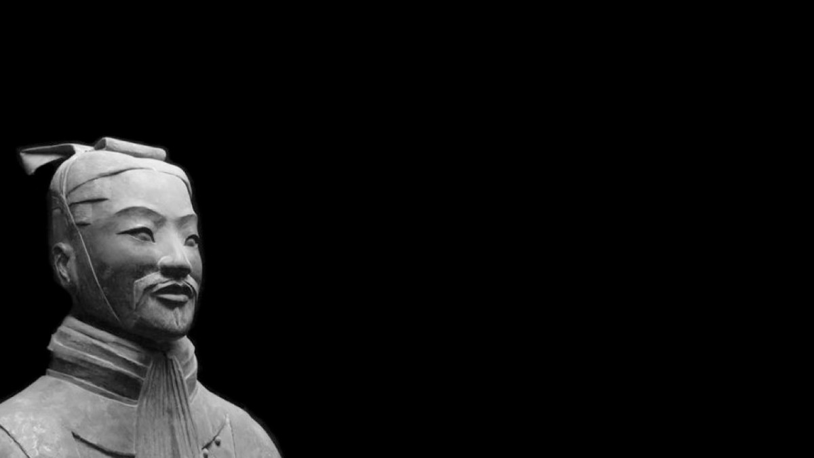 |
{kind=link}